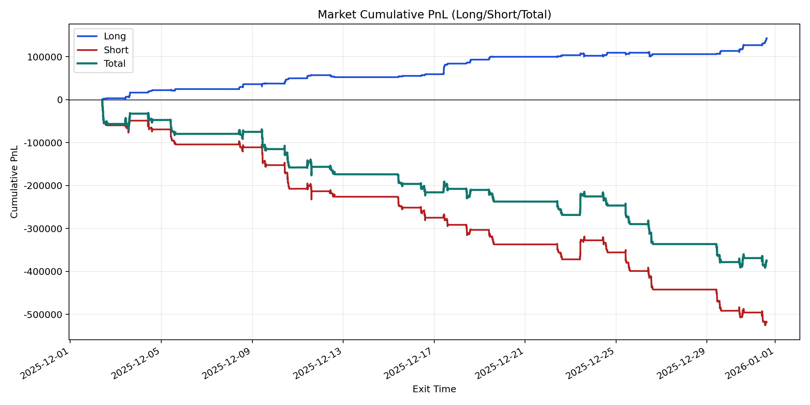
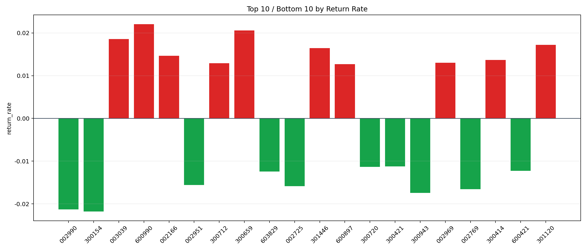

| repo_root | /home/haoranyou/data/output/alpha0.4_1w_5s_3ticks |
|---|---|
| period_months | 1 |
| period_label | 2025-12-02_to_2025-12-31 |
| start_time | 2025-12-02 09:50:12 |
| end_time | 2025-12-31 15:00:00 |
| n_trades | 78955 |
| n_symbols | 1527 |
| total_pnl | -375379.4990499996 |
| long_total_pnl | 142749.0558999999 |
| short_total_pnl | -518128.5549499995 |
| total_entry_notional | 746488062.0 |
| long_entry_notional | 95358098.0 |
| short_entry_notional | 651129964.0 |
| total_return_rate | -0.0005028606861364644 |
| long_return_rate | 0.0014969788501863774 |
| short_return_rate | -0.0007957375387350466 |
| top_symbols_by_return | ["600990", "300659", "003039", "301120", "301446", "002166", "300414", "002969", "300712", "600897"] |
| bottom_symbols_by_return | ["300154", "002990", "300943", "002769", "002725", "002951", "603829", "600421", "300720", "300421"] |

